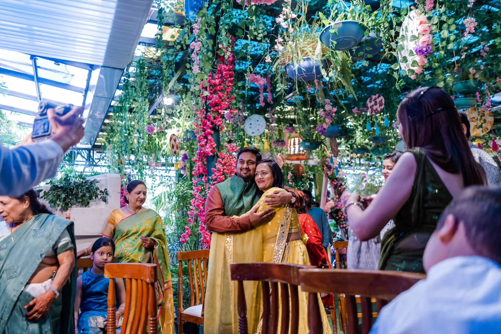
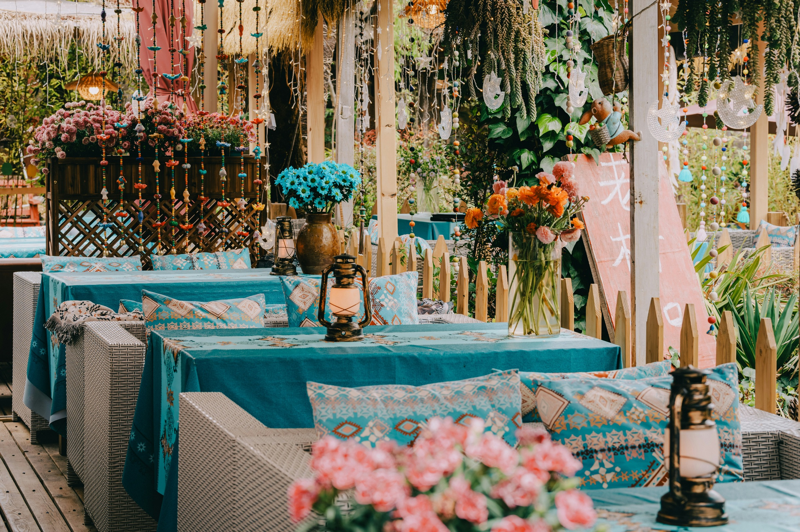
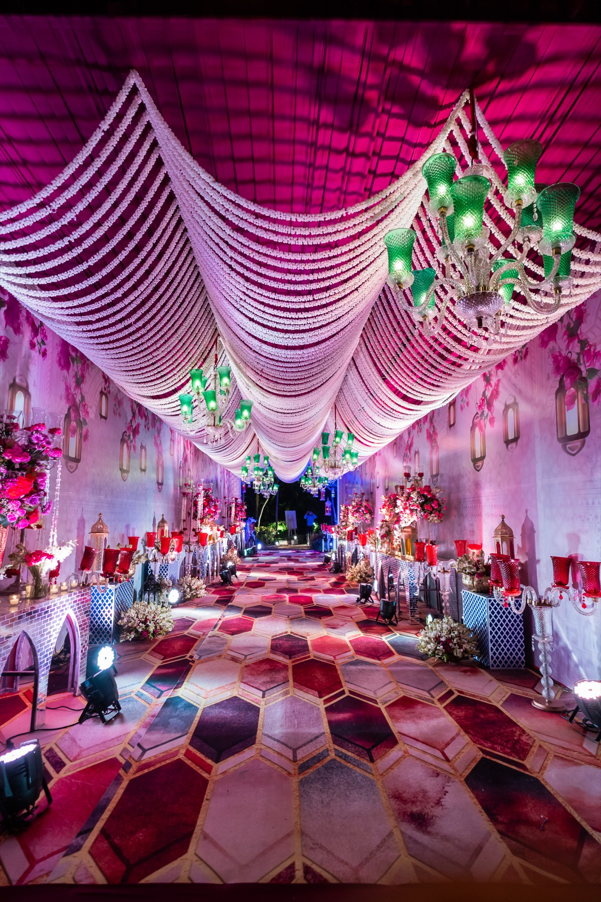
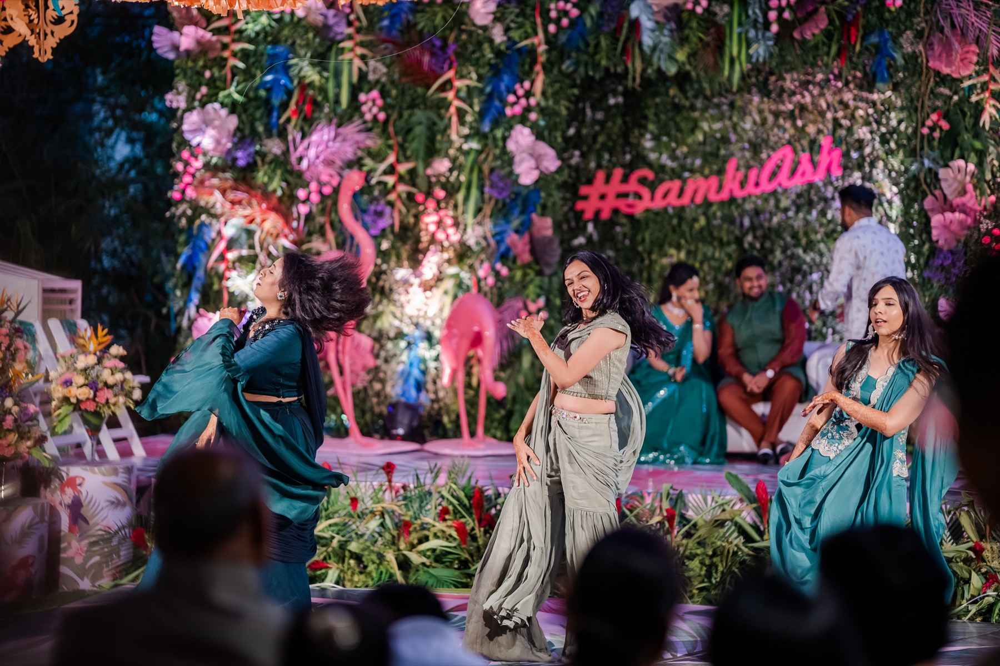
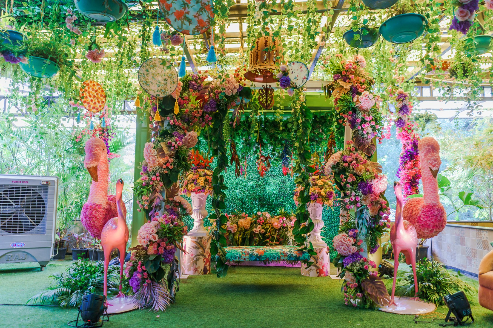
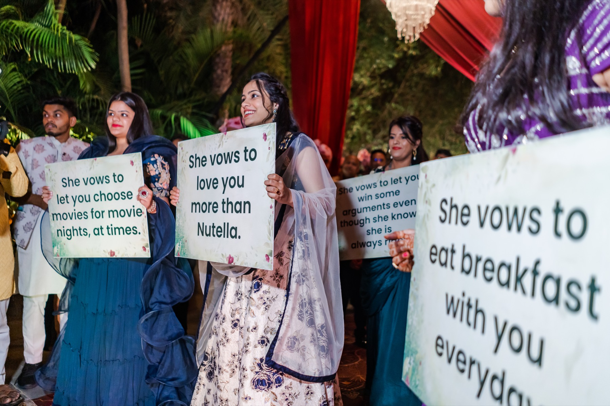

Micro-weddings are the new grand wedding
Why more couples are cutting the guest list, not the celebration, and how to make a smaller wedding feel bigger than ever.
Read the storyTrends, destinations and ideas from the people who plan them. Notes from the wedding week.
Trending now
Why more couples are cutting the guest list, not the celebration, and how to make a smaller wedding feel bigger than ever.
Read the story
Forest mornings, river light and resorts built for a crowd: a practical guide to marrying in the foothills.
Read the story
Blush, ivory, sage and champagne are replacing wall-to-wall red. Here is how to use them without losing the festive warmth.
Read the storyMore from the blog
The sangeet has become the heart of the wedding week. Here is how to plan one that everyone, from grandparents to cousins, remembers.
Read the story
Fresh flowers, local sourcing and smarter décor choices: simple ways to make a big Indian wedding kinder to the planet.
Read the story
Custom vows, meaningful entries and family stories woven into the day: the details that turn a wedding into your wedding.
Read the storyTell us about the wedding you have in mind, and we will help you shape every day of it.
Let’s plan your safar